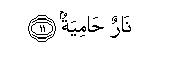

بسم الله الرحمن الرحيم
Sayyid Abul Ala Maududi - Tafhim al-Qur'an - The Meaning of the Qur'an
 101.
Surah Al Qaria (The Disaster)
101.
Surah Al Qaria (The Disaster)
The Surah takes its name from its first word al- qari`ah. This is not only a name but also the title of its subject matter, for the Surah is devoted to Resurrection.
There is no dispute about its being a Makki Surah. Its contents show that this too is one of the earliest Surahs to be revealed at Makkah.
Its theme is Resurrection and the Hereafter. At the outset, the people have been aroused and alarmed, saying: "The Great Disaster! What is the Great Disaster? And what do you know what the Great Disaster is? "Thus, after preparing the listeners for the news of the dreadful calamity, Resurrection has been depicted before them in two sentences, saying that on that Day people will be running about in confusion and bewilderment just like so many scattered moths around a light, and the mountains uprooted, will their cohesion and will fly about like carded wool. Then, it has been said that when Allah's Court is established in the Hereafter and the people are called upon to account for their deeds. The people whose good deeds are found to be heavier than their evil deeds, will be blessed with bliss and happiness, and the people whose good deeds are found to be lighter than their evil deeds, will be cast into the deep pit full of burning fire.

In the name of Allah, the Compassionate, the Merciful.
[1-3] The Great Disaster!1 What is the Great Disaster? And what will explain to you what the Great Disaster is?


[4-11] The Day when men shall be like scattered moths and the mountains like carded wool of different colors.2 Then3 he whose scales are heavy, shall be in a state of bliss, and he whose scales are light,4 shall have the deep pit for his dwelling.5 And do you know what it is? A raging Fire!6
1"Qari'ah " literally means the "striking one" Qar ` is to strike one thing upon another so severely as to produce a noise. In view of this literal meaning, the word qari'ah is used for a dreadful disaster and a great calamity. At another place in the Qur'an this word has been used for a great affliction befalling a nation. In Surah Ar-Ra`d 31, it has been said: "As for the disbelievers, because of their misdeeds, one affliction or the other does not cease to visit them every now and then."
But, here the word al-Qari'ah has been for the Resurrection and in Surah Al-Haaqqah too the Resurrection has been described by this very epithet (v.4). One should remember that here the whole Hereafter, from the first stage of Resurrection to the last stage of judgment and meting out of rewards and punishments, is being depicted together.
2This will be the first stage of Resurrection, when in consequence of the Great Disaster the whole of the present order of the world will be overthrown; the people then will be running about in confusion and bewilderment like so many scattered moths around a light; and the mountains will be flying about like carded wool of different colors. The mountains have been compared to wool of different colors because of the existence of a variety of colors in them.
3From here begins description of the second stage of Resurrection when after having been resurrected men will appear in the Court of God.
4The word mawazin in the original can be plural of mauzun as well as, of mizan. In the first case, mawazin would imply the deeds which might have some weight in the sight of Allah and be, thus, worthy of appreciation; in the second case, mawazin would imply scales of a balance. In the first case, the meaning of the mawazin's being heavier or lighter is that the good deeds will be heavy or light as ,against the evil deeds, for in the sight of Allah only good deeds have any weight and worth. In the second case. the meaning of the mawazin's being heavy is that the scale of the good deeds will be heavier than the scale of evil deeds, in Allah Almighty's Balance of Justice, and their being light means that the scale of good deeds will be lighter than the scale of evil deeds. Besides, in Arabic idiom the word mizan is also used for weight ( wazan); accordingly, the weight's being heavy of light implies the good deeds being heavy or light. In any case, whether mawazin is taken in the meaning of mauzun or of mizan, or of wazan, the intention remains the same, which is that the basis of judgment in the Divine Court will be whether the provision of the deeds that a man has brought is weighty or weightless, or whether his good deeds are heavier than his evil deeds or lighter. This theme has occurred at several places in the Qur'an which explains the meaning fully well.
In Surah Al-A'raf it has been said: "On that Day the weight will be identical with the Truth: accordingly, those whose scales, will be heavy will alone come out successful; and those whose scales are light will be the ones who will have incurred loss upon themselves." (w. 8-9).
In Surah Al-Kahf, it was said: 'O Prophet, say to them: Should we tell you who are the most un-successful people and miserable failures in regard to their deeds? They are those whose all endeavors in the worldly life had gone astray from the Right Way, but they were under the delusion that everything they were doing, was rightly directed: these are the people who rejected the Revelations of their Lord and did not believe that they would ever go before Him. Therefore, all their deeds were Lost, for We will assign no weight to them on the Day of Resurrection." (vv. 103-105).
In Surah Al-Anbiya': "On the Day of Resurrection, We will set up just and accurate balances so that no one will be wronged in the least in any way; even if it be an act equal in weight to a grain of mustard seed, We will bring it forth (to be weighed) and We suffice for reckoning". (v.47).
These verses show that kufr and denial of the truth is in itself such a stupendous evil that it will certainly lower the scale of evils, and there will be no good act of the disbelievers, which may have any weight in the scale of good deeds so that its scale of goodness may become heavy. However, in the scales of the believer there will be the weight of Faith as well as the weight of the good deeds which he performed in the world. On the other hand, every evil done by him will be placed in the scale of evil deeds and then it will be seen whether his scale of the good deeds is heavier or his scale of the evil deeds.
5The words in the original are: ammu hu hawiyah: "his mother will be hawiyah. " Hawiyah is from hawa, which means to fall from a height to a depth, and hawiyah is the deep pit into which something falls. Hell has been called Hawiyah because it will be very deep and the culprits will be thrown into it from the height. As for the words, "his mother will be Hawiyah" they mean: Just as the mother's lap is the child's abode, so Hell will be the culprits' only abode in the Hereafter.
6That is, it will not merely be a deep pit but will also be full of raging fire.